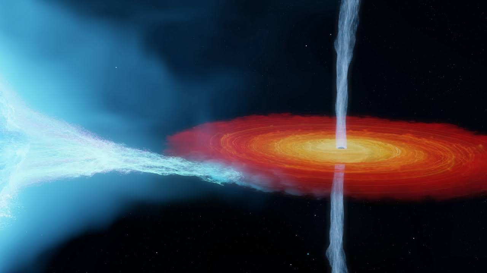
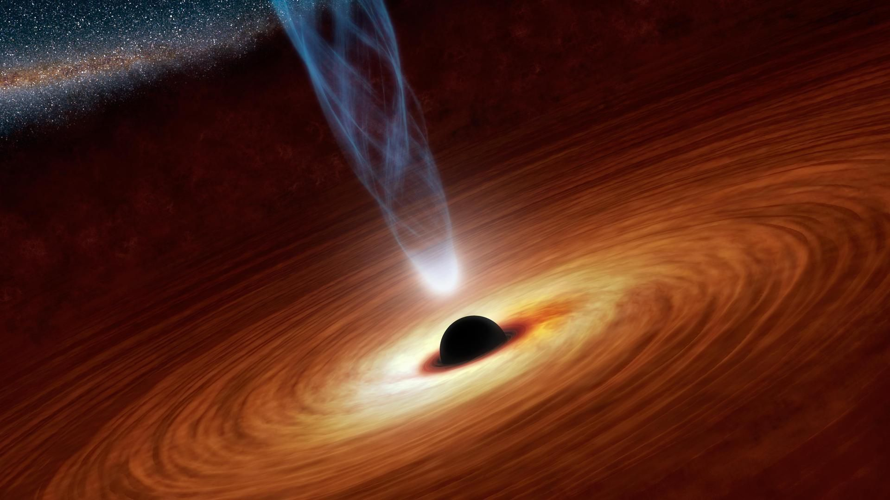

Buraco Negro
A Armadilha do Espaço
Imagine que o espaço cósmico é uma vasta paisagem, e os buracos negros são como armadilhas que podem ser encontradas nessa paisagem. Um buraco negro é uma região do espaço onde a gravidade é tão intensa que nada, nem mesmo a luz, pode escapar de sua atração. É como se fosse uma armadilha que suga tudo o que se aproxima demais.
Exemplo de um Buraco Negro
Pense em uma estrela muito massiva como uma linda fogueira em um acampamento. Quando essa estrela esgota todo o seu combustível nuclear, ela pode entrar em colapso sob sua própria gravidade. Se ela for massiva o suficiente, o colapso pode criar um buraco negro no lugar da estrela. É como se a fogueira tivesse desaparecido, deixando apenas uma armadilha escura no acampamento cósmico.

Quantos Buracos Negros Existem?
É difícil contar quantos buracos negros existem, pois muitos deles estão escondidos no espaço. Estima-se que haja milhões ou até bilhões de buracos negros na Via Láctea sozinha. O universo pode conter incontáveis dessas armadilhas.
Cygnus X-1 na constelação de Cygnus, é um dos buracos negros mais próximos da Terra, a cerca de 6.000 anos-luz de distância. Ele é uma estrela binária, girando em torno de uma estrela companheira, o que o torna visível a telescópios poderosos.
Curiosidades
Tamanhos Variados: Buracos negros podem variar em tamanho, desde pequenos com apenas algumas vezes a massa do Sol até buracos negros supermassivos que podem ter milhões ou bilhões de vezes a massa do nosso Sol.
Efeito de Distorção Temporal: De acordo com a teoria da relatividade de Einstein, a intensa gravidade de um buraco negro distorce o tempo e o espaço ao seu redor. Isso significa que o tempo passa mais devagar perto de um buraco negro do que em lugares distantes.
Horizonte de Eventos: A fronteira ao redor de um buraco negro, chamada de "horizonte de eventos", é o ponto de não retorno. Uma vez que algo cruza esse limite, não pode mais escapar do buraco negro.
Buracos Negros Supermassivos: No centro de muitas galáxias, incluindo a nossa própria Via Láctea, existem buracos negros supermassivos. O buraco negro supermassivo da Via Láctea é chamado Sagitário A*.
